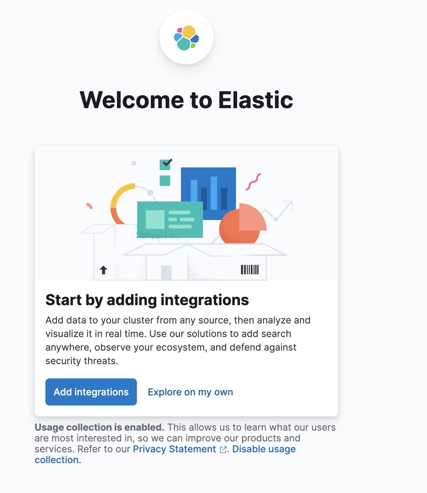

安装
下载安装
curl -O https://artifacts.elastic.co/downloads/elasticsearch/elasticsearch-8.6.0-darwin-x86_64.tar.gz
curl https://artifacts.elastic.co/downloads/elasticsearch/elasticsearch-8.6.0-darwin-x86_64.tar.gz.sha512 | shasum -a 512 -c -
tar -xzf elasticsearch-8.6.0-darwin-x86_64.tar.gz
cd elasticsearch-8.6.0/
初次启动，会有如下提示，密码等信息
✅ Elasticsearch security features have been automatically configured!
✅ Authentication is enabled and cluster connections are encrypted.
ℹ️ Password for the elastic user (reset with `bin/elasticsearch-reset-password -u elastic`):
BYH5mquiw3poy1*ywrU=
ℹ️ HTTP CA certificate SHA-256 fingerprint:
82080351feb2e4397db2cbfad71730aee5a4605d8583fcf577e5c1c65755caaf
ℹ️ Configure Kibana to use this cluster:
• Run Kibana and click the configuration link in the terminal when Kibana starts.
• Copy the following enrollment token and paste it into Kibana in your browser (valid for the next 30 minutes):
eyJ2ZXIiOiI4LjYuMCIsImFkciI6WyIxOTIuMTY4LjEuMTUyOjkyMDAiXSwiZmdyIjoiODIwODAzNTFmZWIyZTQzOTdkYjJjYmZhZDcxNzMwYWVlNWE0NjA1ZDg1ODNmY2Y1NzdlNWMxYzY1NzU1Y2FhZiIsImtleSI6Ilp6X0F3NFVCU0p0V3dJUkpWZWF4OnEwaU1xc25LU0VxTlFZTldLbzNsTHcifQ==
ℹ️ Configure other nodes to join this cluster:
• On this node:
⁃ Create an enrollment token with `bin/elasticsearch-create-enrollment-token -s node`.
⁃ Uncomment the transport.host setting at the end of config/elasticsearch.yml.
⁃ Restart Elasticsearch.
• On other nodes:
⁃ Start Elasticsearch with `bin/elasticsearch --enrollment-token <token>`, using the enrollment token that you generated.
docker 安装
install elasticsearch
都是单机版，集群版等可以参考官方文档
- create network
docker network create elasti- run docker container 不限制内存，会直接飚满
docker run --name es01 --net elastic -p 9200:9200 -it -m 10GB -d docker.elastic.co/elasticsearch/elasticsearch:8.13.2- 查看日志
成功后会显示如下日志 ``` ━━━━━━━━━━━━━━━━━━━━━━━━━━━━━━━━━━━━━━━━━━━━━━━━━━━━━━━━━━━━━━━━━━━━━━━━━━━━━━━━━━━━━━━━━━━━━━━━━━━━━━━━━━━━━━━━━━━━━━━━━━━━━━━━━━━━━━━━━━━━━━━━━━ ✅ Elasticsearch security features have been automatically configured! ✅ Authentication is enabled and cluster connections are encrypted.docker logs -f --tail=200 es01
ℹ️ Password for the elastic user (reset with bin/elasticsearch-reset-password -u elastic):
7U7EdEEZZmnlytolO6Ix
ℹ️ HTTP CA certificate SHA-256 fingerprint: 8c21fbb086c634b70da6ed1759f855ee3c00e5f6a6e33c1832aaac223975cea3
ℹ️ Configure Kibana to use this cluster: • Run Kibana and click the configuration link in the terminal when Kibana starts. • Copy the following enrollment token and paste it into Kibana in your browser (valid for the next 30 minutes): eyJ2ZXIiOiI4LjEzLjIiLCJhZHIiOlsiMTcyLjMwLjAuMjo5MjAwIl0sImZnciI6IjhjMjFmYmIwODZjNjM0YjcwZGE2ZWQxNzU5Zjg1NWVlM2MwMGU1ZjZhNmUzM2MxODMyYWFhYzIyMzk3NWNlYTMiLCJrZXkiOiJyang3d1k0QlFGRlk3c2RXLW1oaTo3ZGMwSlRidFFyT2FkbDd5NVpQbTlBIn0=
ℹ️ Configure other nodes to join this cluster:
• Copy the following enrollment token and start new Elasticsearch nodes with bin/elasticsearch --enrollment-token <token> (valid for the next 30 minutes):
eyJ2ZXIiOiI4LjEzLjIiLCJhZHIiOlsiMTcyLjMwLjAuMjo5MjAwIl0sImZnciI6IjhjMjFmYmIwODZjNjM0YjcwZGE2ZWQxNzU5Zjg1NWVlM2MwMGU1ZjZhNmUzM2MxODMyYWFhYzIyMzk3NWNlYTMiLCJrZXkiOiJyRHg3d1k0QlFGRlk3c2RXLW1oaDpOU0FUeUdjT1FtS0lIdjFJa1g0Mm9BIn0=
If you're running in Docker, copy the enrollment token and run:
docker run -e "ENROLLMENT_TOKEN=<token>" docker.elastic.co/elasticsearch/elasticsearch:8.13.2
━━━━━━━━━━━━━━━━━━━━━━━━━━━━━━━━━━━━━━━━━━━━━━━━━━━━━━━━━━━━━━━━━━━━━━━━━━━━━━━━━━━━━━━━━━━━━━━━━━━━━━━━━━━━━━━━━━━━━━━━━━━━━━━━━━━━━━━━━━━━━━━━━
- 访问es
> 一般情况都会成功，有时候不成功，不知到为什么，第二天重试又可以了
```shell
export ELASTIC_PASSWORD="7U7EdEEZZmnlytolO6Ix"
docker cp es01:/usr/share/elasticsearch/config/certs/http_ca.crt .
curl --cacert http_ca.crt -u elastic:$ELASTIC_PASSWORD https://localhost:9200
{
"name" : "a3fa0894976d",
"cluster_name" : "docker-cluster",
"cluster_uuid" : "AzNl2fw3RFySNo4_8UtRTw",
"version" : {
"number" : "8.13.2",
"build_flavor" : "default",
"build_type" : "docker",
"build_hash" : "16cc90cd2d08a3147ce02b07e50894bc060a4cbf",
"build_date" : "2024-04-05T14:45:26.420424304Z",
"build_snapshot" : false,
"lucene_version" : "9.10.0",
"minimum_wire_compatibility_version" : "7.17.0",
"minimum_index_compatibility_version" : "7.0.0"
},
"tagline" : "You Know, for Search"
}
- 错误
- ERROR: Elasticsearch died while starting up, with exit code 78
遇到这个错误是因为系统的 vm.max_map_count 值过小，默认是 65530
- 查看vm.max_map_count
sysctl -a|grep vm.max_map_count - 设置vm.max_map_count,一般设置为默认值的4倍
sudo sysctl -w vm.max_map_count=262144 - vm.max_map_count 是什么 max_map_count文件包含限制一个进程可以拥有的VMA(虚拟内存区域)的数量。虚拟内存区域是一个连续的虚拟地址空间区域。在进程的生命周期中，每当程序尝试在内存中映射文件，链接到共享内存段，或者分配堆空间的时候，这些区域将被创建。调优这个值将限制进程可拥有VMA的数量。限制一个进程拥有VMA的总数可能导致应用程序出错，因为当进程达到了VMA上线但又只能释放少量的内存给其他的内核进程使用时，操作系统会抛出内存不足的错误。如果你的操作系统在NORMAL区域仅占用少量的内存，那么调低这个值可以帮助释放内存给内核用。
- 查看vm.max_map_count
- ERROR: Elasticsearch died while starting up, with exit code 78
- 重新为用户生成密码
docker exec -it es01 /usr/share/elasticsearch/bin/elasticsearch-reset-password -u elastic
install Kibana
- run a Kibana container
Kibana是一个开源的数据分析与可视化平台，与Elasticsearch搜索引擎一起使用。
docker run --name kib01 --net elastic -p 5601:5601 -it -d docker.elastic.co/kibana/kibana:8.13.2
- 浏览器访问链接
http://192.168.1.149:5601/ - 生成访问需要的token
有时候不成功，多试几次就好了
docker exec -it es01 /usr/share/elasticsearch/bin/elasticsearch-create-enrollment-token -s kibana - 输入token后，会让提供6位的验证码
docker exec -it kib01 bin/kibana-verification-code - 验证码验证成功后，会让登陆elasticsearch,需要输入用户名和密码
用户名和密码可以通过安装好es后输出的关键信息得知

参考
使用
create index
(base) ➜ elasticsearch-8.6.0 curl -X PUT --cacert $ES_HOME/config/certs/http_ca.crt -u elastic 'https://localhost:9200/split_file?pretty'
Enter host password for user 'elastic':
{
"acknowledged" : true,
"shards_acknowledged" : true,
"index" : "split_file"
}
list index
(base) ➜ elasticsearch-8.6.0 curl -X GET --cacert $ES_HOME/config/certs/http_ca.crt -u elastic "https://localhost:9200/_cat/indices?v=true&s=index&pretty"
Enter host password for user 'elastic':
health status index uuid pri rep docs.count docs.deleted store.size pri.store.size
yellow open split_file Kx9lpPyMSV26yAGXMolXyg 1 1 0 0 225b 225b
create a new document
(base) ➜ elasticsearch-8.6.0 curl -X POST --cacert $ES_HOME/config/certs/http_ca.crt -u elastic "https://localhost:9200/split_file/_doc/?pretty" -H 'Content-Type: application/json' -d'
{
"uuid": "6d20a8ba-9706-11ed-8f3b-acde48001122",
"filename": "Text_343.jpg",
"path": "data/split_file/og_file/huaxintest/ce91c1fc9c5ca0daf6eeca65cfef6861_758ca3e7ec50b24aeb1531df7f278e6c.jpg",
"time_stamp": "2022-05-19 14:15:25.255753",
"marked_status": 1,
"quality_status": 1,
"app_id": 2,
"user_id": 1,
"data_type": 1,
"dataset_id": 5,
"marked_file_path": "data/split_file/marked_file/huaxintest/ce91c1fc9c5ca0daf6eeca65cfef6861_758ca3e7ec50b24aeb1531df7f278e6c.json",
"predict_value": "456test"
}
'
Enter host password for user 'elastic':
{
"_index" : "split_file",
"_id" : "JOjuw4UBPd4SWO866Je4",
"_version" : 1,
"result" : "created",
"_shards" : {
"total" : 2,
"successful" : 1,
"failed" : 0
},
"_seq_no" : 0,
"_primary_term" : 1
}
get document
get document by id
(base) ➜ elasticsearch-8.6.0 curl -X GET --cacert $ES_HOME/config/certs/http_ca.crt -u "elastic:BYH5mquiw3poy1*ywrU=" "https://localhost:9200/split_file/_doc/JOjuw4UBPd4SWO866Je4?pretty"
{
"_index" : "split_file",
"_id" : "JOjuw4UBPd4SWO866Je4",
"_version" : 1,
"_seq_no" : 0,
"_primary_term" : 1,
"found" : true,
"_source" : {
"uuid" : "6d20a8ba-9706-11ed-8f3b-acde48001122",
"filename" : "Text_343.jpg",
"path" : "data/split_file/og_file/huaxintest/ce91c1fc9c5ca0daf6eeca65cfef6861_758ca3e7ec50b24aeb1531df7f278e6c.jpg",
"time_stamp" : "2022-05-19 14:15:25.255753",
"marked_status" : 1,
"quality_status" : 1,
"app_id" : 2,
"user_id" : 1,
"data_type" : 1,
"dataset_id" : 5,
"marked_file_path" : "data/split_file/marked_file/huaxintest/ce91c1fc9c5ca0daf6eeca65cfef6861_758ca3e7ec50b24aeb1531df7f278e6c.json",
"predict_value" : "456test"
}
}
list all documents of index
(base) ➜ elasticsearch-8.6.0 curl -X GET --cacert $ES_HOME/config/certs/http_ca.crt -u "elastic:BYH5mquiw3poy1*ywrU=" "https://localhost:9200/split_file/_search"
{"took":93,"timed_out":false,"_shards":{"total":1,"successful":1,"skipped":0,"failed":0},"hits":{"total":{"value":1,"relation":"eq"},"max_score":1.0,"hits":[{"_index":"split_file","_id":"JOjuw4UBPd4SWO866Je4","_score":1.0,"_source":
{
"uuid": "6d20a8ba-9706-11ed-8f3b-acde48001122",
"filename": "Text_343.jpg",
"path": "data/split_file/og_file/huaxintest/ce91c1fc9c5ca0daf6eeca65cfef6861_758ca3e7ec50b24aeb1531df7f278e6c.jpg",
"time_stamp": "2022-05-19 14:15:25.255753",
"marked_status": 1,
"quality_status": 1,
"app_id": 2,
"user_id": 1,
"data_type": 1,
"dataset_id": 5,
"marked_file_path": "data/split_file/marked_file/huaxintest/ce91c1fc9c5ca0daf6eeca65cfef6861_758ca3e7ec50b24aeb1531df7f278e6c.json",
"predict_value": "456test"
}
}]}}%
模糊查询
(base) ➜ elasticsearch-8.6.0 curl -X GET --cacert $ES_HOME/config/certs/http_ca.crt -u "elastic:BYH5mquiw3poy1*ywrU=" "https://localhost:9200/split_file/_search?pretty" -H 'Content-Type: application/json' -d'
{
"query": {
"wildcard":{
"predict_value":{
"value": "*6t*"
}
}
}
}
'
{
"took" : 43,
"timed_out" : false,
"_shards" : {
"total" : 1,
"successful" : 1,
"skipped" : 0,
"failed" : 0
},
"hits" : {
"total" : {
"value" : 1,
"relation" : "eq"
},
"max_score" : 1.0,
"hits" : [
{
"_index" : "split_file",
"_id" : "JOjuw4UBPd4SWO866Je4",
"_score" : 1.0,
"_source" : {
"uuid" : "6d20a8ba-9706-11ed-8f3b-acde48001122",
"filename" : "Text_343.jpg",
"path" : "data/split_file/og_file/huaxintest/ce91c1fc9c5ca0daf6eeca65cfef6861_758ca3e7ec50b24aeb1531df7f278e6c.jpg",
"time_stamp" : "2022-05-19 14:15:25.255753",
"marked_status" : 1,
"quality_status" : 1,
"app_id" : 2,
"user_id" : 1,
"data_type" : 1,
"dataset_id" : 5,
"marked_file_path" : "data/split_file/marked_file/huaxintest/ce91c1fc9c5ca0daf6eeca65cfef6861_758ca3e7ec50b24aeb1531df7f278e6c.json",
"predict_value" : "456test"
}
}
]
}
}
正则查询
es的正则查询和平时我们使用的正则稍有区别，需要根据官方文档说明来写正则。比如，我们正则匹配一个包含数字和英文的： ```shell (base) ➜ elasticsearch-8.6.0 curl -X GET --cacert $ES_HOME/config/certs/http_ca.crt -u "elastic:BYH5mquiw3poy1*ywrU=" "https://localhost:9200/split_file/_search?pretty" -H 'Content-Type: application/json' -d' { "query": { "regexp": { "predict_value": "<0-1000000000>[a-z]{0,4}" } } } ' { "took" : 24, "timed_out" : false, "_shards" : { "total" : 1, "successful" : 1, "skipped" : 0, "failed" : 0 }, "hits" : { "total" : { "value" : 1, "relation" : "eq" }, "max_score" : 1.0, "hits" : [ { "_index" : "split_file", "_id" : "JOjuw4UBPd4SWO866Je4", "_score" : 1.0, "_source" : { "uuid" : "6d20a8ba-9706-11ed-8f3b-acde48001122", "filename" : "Text_343.jpg", "path" : "data/split_file/og_file/huaxintest/ce91c1fc9c5ca0daf6eeca65cfef6861_758ca3e7ec50b24aeb1531df7f278e6c.jpg", "time_stamp" : "2022-05-19 14:15:25.255753", "marked_status" : 1, "quality_status" : 1, "app_id" : 2, "user_id" : 1, "data_type" : 1, "dataset_id" : 5, "marked_file_path" : "data/split_file/marked_file/huaxintest/ce91c1fc9c5ca0daf6eeca65cfef6861_758ca3e7ec50b24aeb1531df7f278e6c.json", "predict_value" : "456test" } } ] } }
```